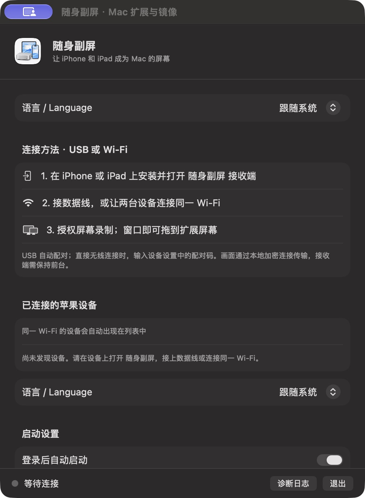
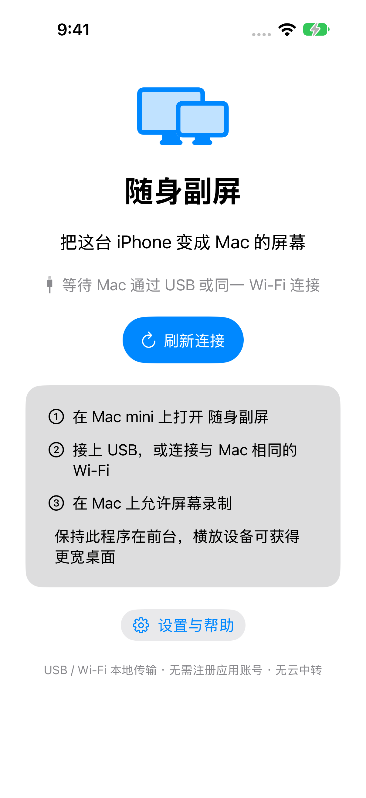
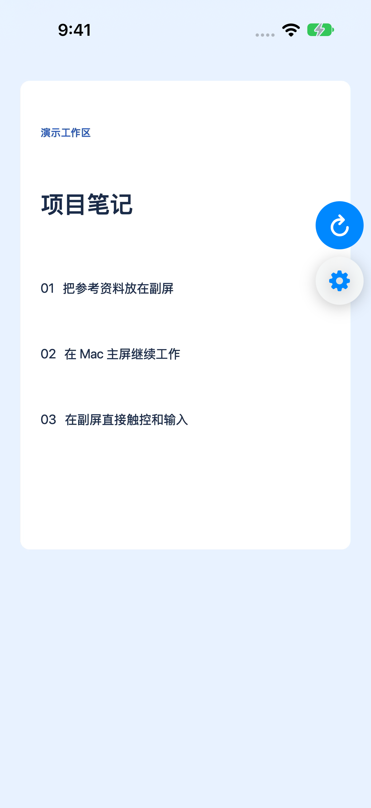
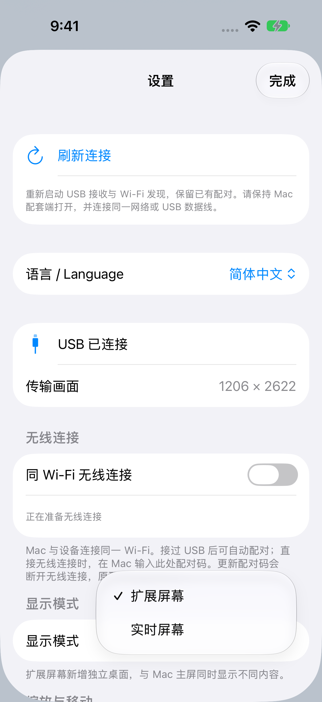
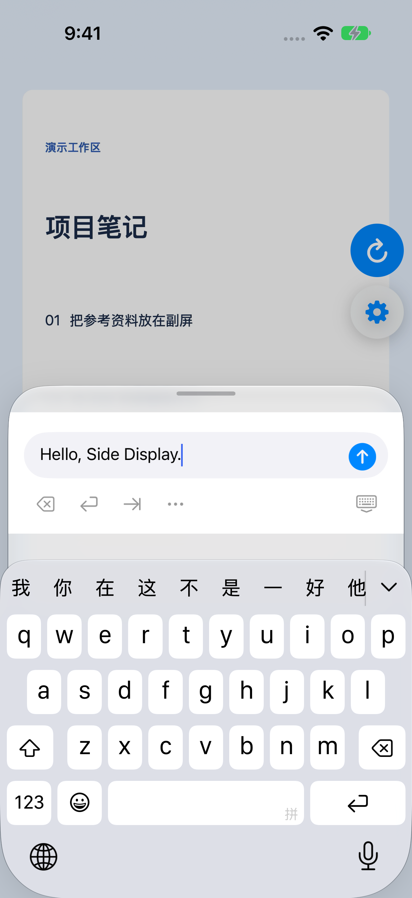
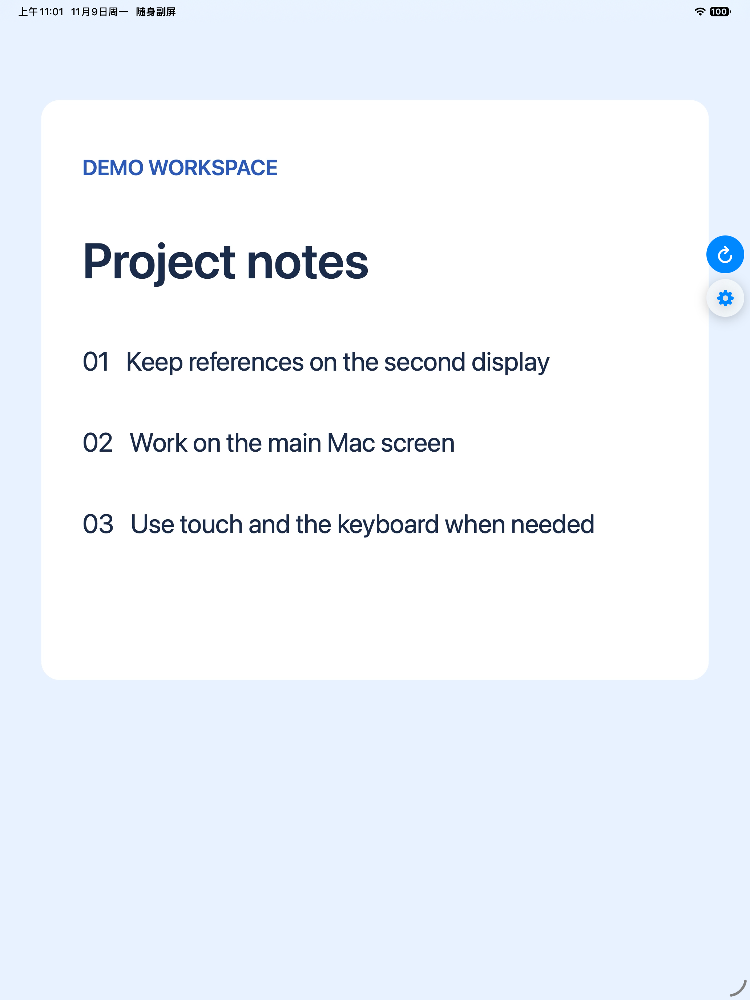

随身副屏 · Side Display
让 iPhone 和 iPad 成为 Mac（包括 Mac mini）的第二块屏幕。
支持 Mac 电脑（包括 Mac mini）连接 iPhone 手机或 iPad 平板：通过 USB 数据线或同一 Wi-Fi／本地网络传输桌面。独立扩展工作区，或实时查看主屏，并用触控、系统键盘和听写操作 Mac。
功能说明
| 功能 | 可以做什么 |
|---|---|
| 扩展屏幕 | 建立独立的桌面工作区，把参考资料、笔记或其他窗口拖到手机、平板屏幕 |
| 实时屏幕 | 实时显示 Mac 主屏，查看菜单栏、Dock 和桌面窗口 |
| USB 与无线 | 使用可信任的 USB 数据线连接，或在同一本地网络内配对；无线传输经过加密 |
| 触控操作 | 单指点击、按住拖动，双指上下或左右滑动滚动内容 |
| 缩放与移动 | 双指捏合缩放；开启“移动画面”后查看放大区域，关闭后继续操控 Mac |
| 键盘与听写 | 用原生输入条编辑文字，点发送箭头输入到 Mac；也可使用系统键盘麦克风听写 |
| 自动键盘 | 点中支持识别的 Mac 输入框时打开手机输入条；无法识别时可手动打开 |
| 悬浮设置 | 拖动设置按钮到顺手的位置，松手后吸附屏幕侧边 |
| 中英文 | 在“语言 / Language”中选择简体中文、English 或跟随系统 |
线缆或网络中断时，点接收端的「刷新连接」即可重新连接，已有无线配对会保留。
开始使用
1. 打开两端程序
Mac 安装官网提供的配套端；iPhone/iPad 安装 App Store 接收端（正式发行后提供）。打开两端，解锁接收设备并保持应用在前台。在 Mac 授予屏幕录制权限；需要触控与键盘控制时，再授予辅助功能权限。
2. 选择 USB 或 Wi-Fi
USB：使用支持数据传输的线缆连接手机或平板与 Mac，按系统提示信任此 Mac。USB 连接也可为后续无线使用保存配对。
无线：两端连接同一本地网络，并允许“本地网络”权限。Mac 可以通过网线连接同一路由器。首次直接无线连接时，在手机“设置 → 无线连接”查看配对码，再在 Mac 上选择设备并输入该码。不要向其他人分享配对码。
3. 选择显示模式
打开悬浮设置中的“显示模式”。选择“扩展屏幕”获得独立工作区，在 Mac 的屏幕排列里调整方向和位置，再把窗口拖到副屏。选择“实时屏幕”查看 Mac 主屏桌面。
4. 操作、缩放和输入
单指点击或拖动来操作 Mac，双指滑动来滚动。双指捏合可以放大；需要移动视口时，打开“移动画面”，查看完再关闭。可使用“画面归位”恢复显示；铺满显示在比例不同时会裁切部分边缘，完整显示则可能留白。
点中可编辑区域后，在手机输入条中输入文字，再点右侧发送箭头。若没有自动弹出，请从悬浮设置打开“键盘输入”。点击系统键盘麦克风进行听写，确认文字后发送；用地球键切换中文或英文键盘。
5. 结束连接
在手机设置中选择“停止接收”，或从 Mac 停止连接。无线不可用时，检查两端本地网络权限、路由器设备隔离，以及接收端是否仍在前台。
Mac 登录后自动启动
Mac 配套端首次运行默认开启登录后自动启动，可在启动设置或系统登录项中关闭。
免费使用
连接 Mac 后，即可不限时使用实时屏幕、扩展屏幕和远程控制。
软件截图
Mac 截图来自实际配套端。iPhone 和 iPad 截图取自免费版接收端，画面中的笔记是虚构示例。
Mac 配套端：连接引导与权限

iPhone：连接引导

iPhone：独立副屏工作区

iPhone：扩展与实时屏幕

iPhone：原生键盘输入

iPad：更大的工作区

使用要求与边界
Mac 需要 macOS 14 或更新版本，并已进入登录后的桌面；接收端需要 iOS/iPadOS 16 或更新版本。保持手机、平板解锁且程序前台运行。它不能替代开机、FileVault、恢复模式或登录前的物理屏幕，不传输 Mac 音频。
画面流畅度取决于 Mac 编码能力、分辨率、网络和屏幕内容；可在 Mac 选择合适的画质。听写可用性与语言跟随系统键盘设置。当前已经有 iPhone 实机功能验收；真实 iPad 和旧版系统仍需进一步验收，不承诺所有型号都已实测。
Mac 配套端已提供免费签名公证下载：下载 Mac 配套端与对应源码。iPhone/iPad 接收端正在准备 App Store 审核，尚未正式上架。